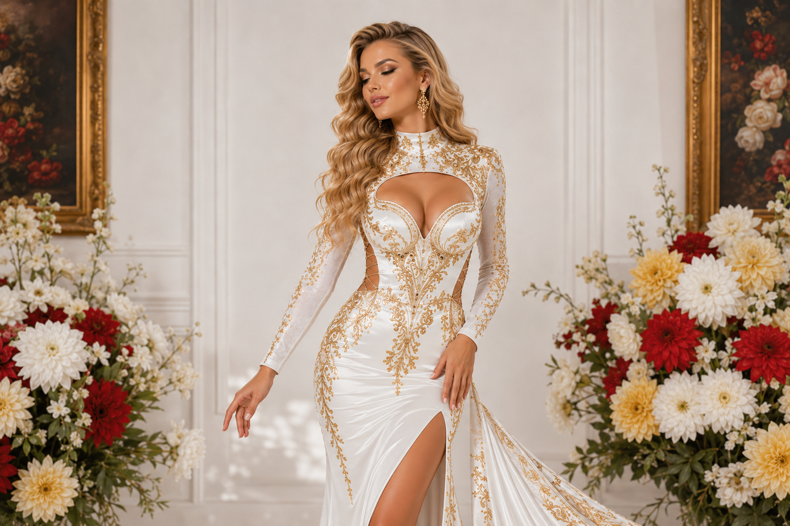
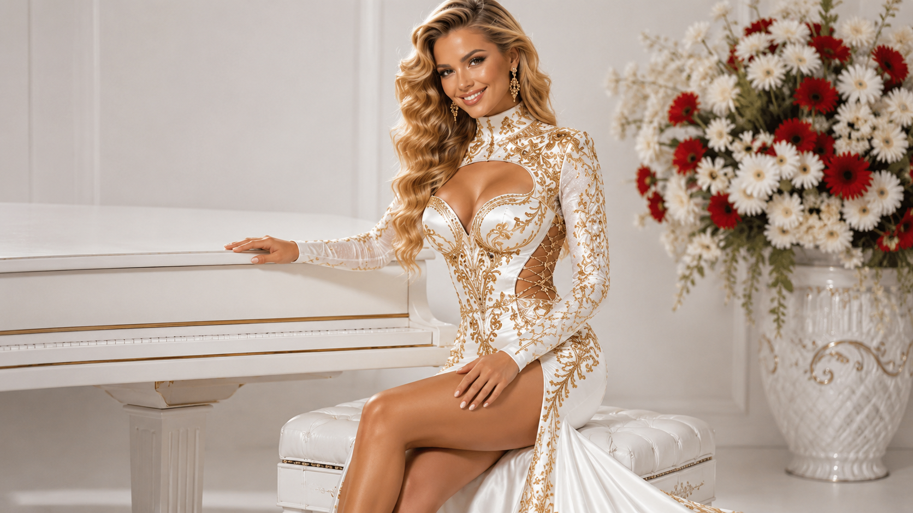
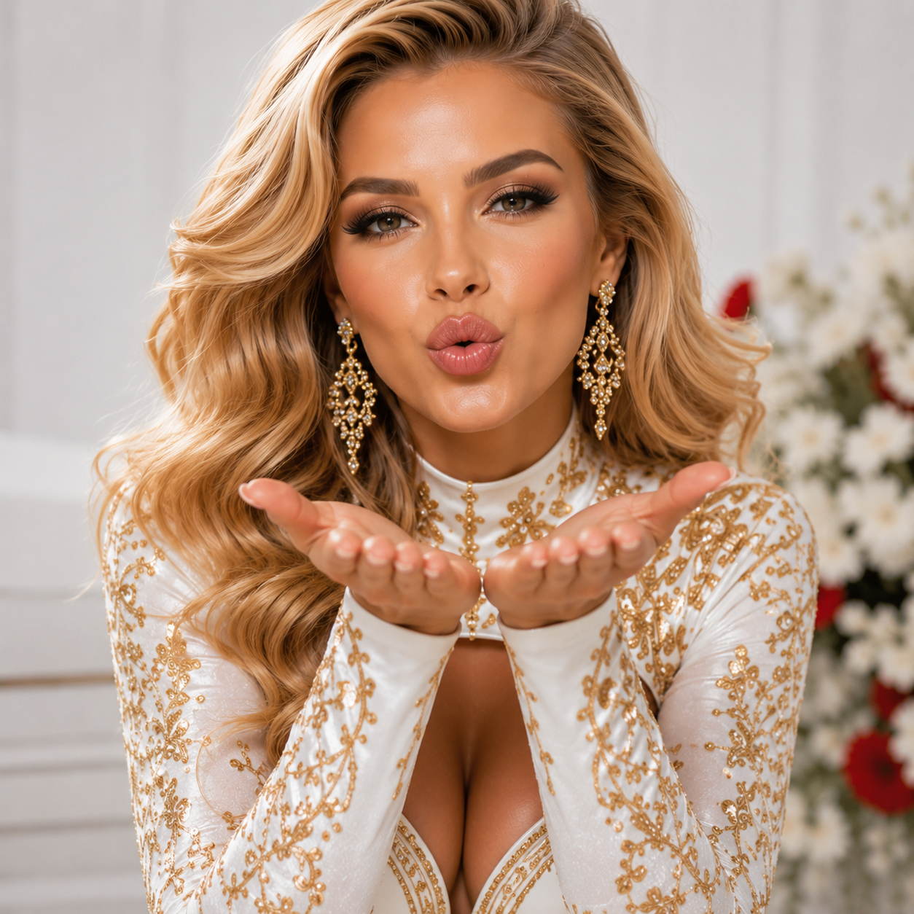

21 мая
Большой театр
Аида
опера · главная сцена · 19:00
Сценический образ, академическая школа и современная подача: от камерной лирики до большой оперной афиши.


Ольга Иванова — сопрано, артистка оперной сцены и концертных программ.
Окончила музыкальное училище и Московскую консерваторию. Работает в оперном театре, выступает с романсовыми программами и симфоническими концертами.
Репертуар строится вокруг русской оперы, итальянской классики, французской лирики и камерной вокальной музыки.
опера · главная сцена · 19:00

сольная программа · камерный зал

театр оперы и балета · 2026
